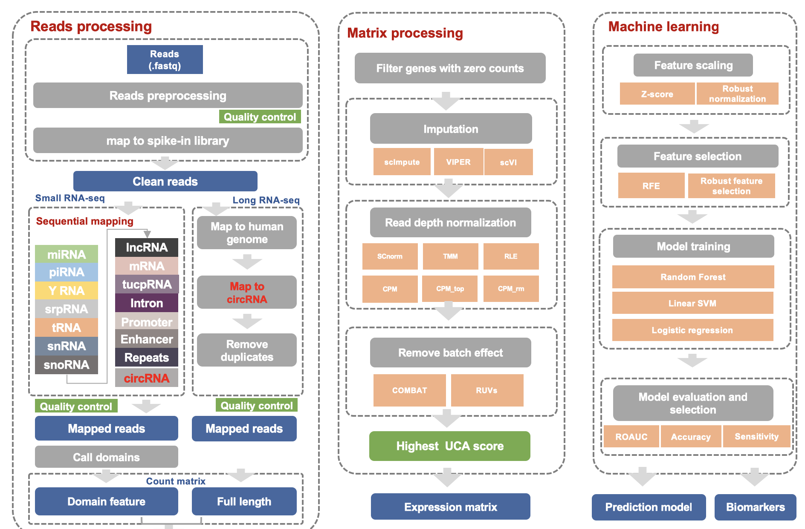

exSeek

Workflow

Installation
Install required software packages according to installation
Download the scripts:
git clone https://github.com/lulab/exSeek-dev.git
Input files
Genome and annotation directory
Download preprocessed genome annotations to genome/hg38
Refer to the documentation for details.
Input data files
| File name | Description |
|---|---|
${input_dir}/fastq/${sample_id}.fastq |
Read files (single-end sequencing) |
${input_dir}/fastq/${sample_id}_1.fastq, ${input_dir}/fastq/${sample_id}_2.fastq |
Read files (paired-end sequencing) |
${input_dir}/sample_ids.txt |
A text file with one sample ID per line. |
${input_dir}/sample_classes.txt |
A tab-deliminated file (with header) with two columns: sample_id, label (optional) |
${input_dir}/batch_info.txt |
A comma-deliminated file (with header) with at least two columns: sample_id, batch1, batch2, ... (optional) |
${input_dir}/compare_groups.yaml |
A YAML file defining positive and negative classes. (optional) |
${config_dir}/${dataset}.yaml |
A YAML file for configuration parameters for the dataset |
compare_groups.yaml
Every key-value pairs defines a compare group and a negative-positive class pair:
Normal-CRC: ["Healthy Control", "Colorectal Cancer"]
Dataset configuration file
All parameters are specified in a configuration file in YAML format.
The default configuration file is (snakemake/default_config.yaml).
Example configuration files can be found in config/.
The parameter values in the configuration file can also be overrided through the --config option in snakemake.
The following parameters should be changed:
| Parameter | Description | Example |
|---|---|---|
| genome_dir | Directory for genome and annotation files | genome/hg38 |
| data_dir | Directory for input files | data/dataset |
| temp_dir | Temporary directory | tmp |
| output_dir | Directory for all output files | output/dataset |
| aligner | Mapping software | bowtie2 |
| adaptor | 3' adaptor sequence for single-end RNA-seq | AGATCGGAAGAGCACACGTCTGAACTCCAGTCAC |
Cluster configuration file
Please refer the link for descriptions of cluster configuration file.
Basic usage of exSeek
Run exseek.py --help to get basic usage:
usage: exseek.py [-h] --dataset DATASET [--config-dir CONFIG_DIR] [--cluster]
[--cluster-config CLUSTER_CONFIG]
[--cluster-command CLUSTER_COMMAND]
[--singularity SINGULARITY]
[--singularity-wrapper-dir SINGULARITY_WRAPPER_DIR]
{quality_control,prepare_genome,mapping,count_matrix,call_domains,normalization,feature_selection,update_sequential_mapping,update_singularity_wrappers}
exSeek main program
positional arguments:
{quality_control,prepare_genome,mapping,count_matrix,call_domains,normalization,feature_selection,update_sequential_mapping,update_singularity_wrappers}
optional arguments:
-h, --help show this help message and exit
--dataset DATASET, -d DATASET
dataset name
--config-dir CONFIG_DIR, -c CONFIG_DIR
directory for configuration files
--cluster submit to cluster
--cluster-config CLUSTER_CONFIG
cluster configuration file ({config_dir}/cluster.yaml
by default)
--cluster-command CLUSTER_COMMAND
command for submitting job to cluster (default read
from {config_dir}/cluster_command.txt
--singularity SINGULARITY
singularity image file
--singularity-wrapper-dir SINGULARITY_WRAPPER_DIR
directory for singularity wrappers
Note
- Other arguments are passed to snakemake
- Specify number of processes to run in parallel with -j
Small RNA-seq analysis
Configuration file
An example configuration file for small RNA single-end sequencing can be found in config/small_se_example.yaml.
Quality control, adaptor removal and trimming
${exseek_path}/bin/exseek.py quality_control --dataset ${dataset}
Mapping
exseek.py mapping --dataset ${dataset}
Note
If you changed mapping order in the rna_types config variable, you should update the snakefile with the command:
exseek.py update_sequential_mapping --dataset ${dataset}
Description of output files: output_files
Generate count matrix
${exseek_path}/bin/exseek.py count_matrix --dataset ${dataset}
Count matrix
- File path: ${output_dir}/count_matrix/transcript.txt
- First row: sample IDs
- First column: feature names
- Feature name: gene_id|gene_type|gene_name
Call domains
${exseek_path}/bin/exseek.py call_domains --dataset ${dataset}
Read count matrix
- File path: ${output_dir}/count_matrix/domain_long.txt
- First row: sample IDs
- First column: feature names
- Feature name: gene_id|gene_type|gene_name|domain_id|transcript_id|start|end
Combine read counts of miRNA/piRNA and domains
${exseek_path}/bin/exseek.py combine_domains --dataset ${dataset}
Normalization
${exseek_path}/bin/exseek.py normalization --dataset ${dataset}
Feature selection
${exseek_path}/bin/exseek.py feature_selection --dataset ${dataset}
Differential expression
${exseek_path}/bin/exseek.py differential_expression --dataset ${dataset}
Long RNA-seq analysis
Configuration file
An example configuration file for long RNA paired-end sequencing can be found in config/long_pe_example.yaml.
Quality control and adaptor removal
${exseek_path}/bin/exseek.py quality_control --dataset ${dataset}
Mapping
${exseek_path}/bin/exseek.py mapping --dataset ${dataset}
Generate count matrix
${exseek_path}/bin/exseek.py count_matrix --dataset ${dataset}